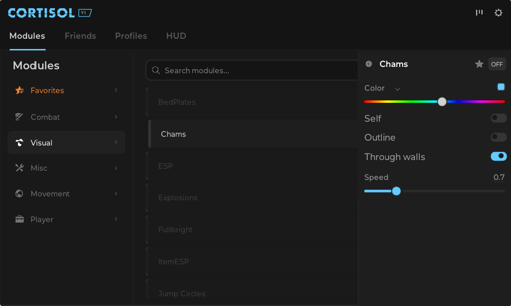
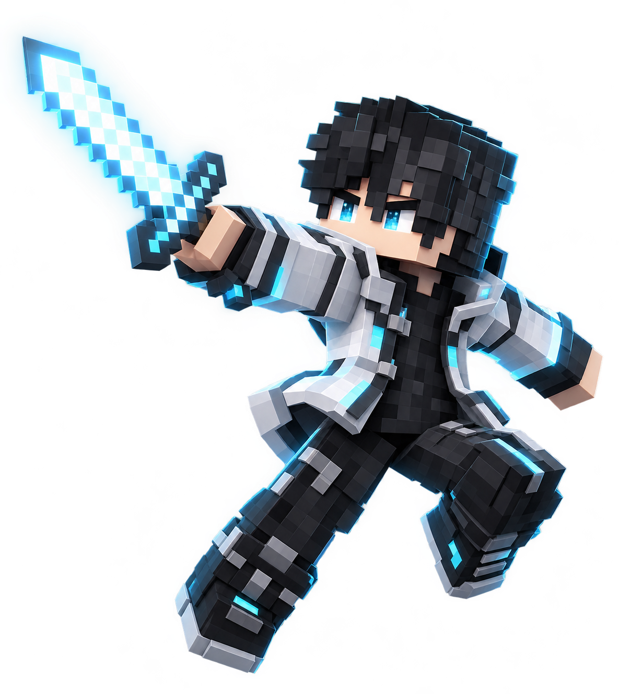

Chams &
Shader ESP
Player highlights and outlines with configurable colors, opacity and rendering settings.
View setup
Native client for Minecraft Bedrock 26.60.
For Minecraft for Windows 26.60.
Looking for macOS?
Player highlights and outlines with configurable colors, opacity and rendering settings.
View setup
Use Minecraft for Windows 26.60. On macOS, start it with Blockintosh.
On Mac, unzip the download and open Cortisol.app. On Windows, open the downloaded launcher.
Click Inject, then use Right Shift in-game to open the Cortisol menu.